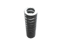

Лифтовые пружины
Изготовление лифтовых пружин на заказ партиями от 1-й штуки от 1-го дня.
Выполним по разнообразным параметрам, чертежам или образцу, фото, эскизам.
(сроки выполнения заказа обговариваются с каждым клиентом индивидуально)
-

- 
-

Изготовление и производство лифтовых пружин
Наша производственная компания ООО "Индустриал Спрингс" изготавливает и реализует пружины для любых видов лифтов по всей территории Украины. В современных лифтах пружины используются во всех действующих узлах, как в пассажирских, так и в грузовых. В основном применяются витые пружины сжатия и растяжения, из проволоки круглого сечения. Пружинные элементы лифтовых конструкций изготавливаются только из высококачественного сертифицированного материала , что гарантирует безопаснось и обеспечивает смягчение вибрации при движении кабины, а так же высокую плавность торможения и старта. “Индустриал Спрингс” изготавливает лифтовые пружины на заказ по индивидуальным чертежам или образцам, гарантируя на выходе точное соответствие продукта всем указанным параметрам в техническом задании.
Мы изготавливаем пружины для всех основных механизмов лифтовых узлов:
- - Пружина подвижного пола лифтов;
- - Пружина замка двери шахты лифта;
- - Пружина подвески противовеса лифта;
- - Пружина ограничителя скорости лифта;
- - Пружина буферного устройства лифта;
- - Пружина привода двери кабины лифта;
- - Пружина ловителя лифта;
- - Пружина тормоза лифта;
- - Пружина башмака лифта.
Лифтовые пружины можно заказать и купить у нас крупными и мелкооптовыми партиями. При оформлении заявки на расчет и изготовление лифтовых пружин необходимо проконсультироваться с нашими специалистами, для точного составления технического задания к Вашему заказу, где будут учтены все необходимые параметры. Для заказа и ознакомления с прайсом свяжитесь с мененджером нашей компании через форму заявки или по одному из телефонов: 066 283 80 82, 097 305 81 85, 0532 591 590.
С.125.001 |
Пружина подвижного пола лифтов |
С.125.002 |
Пружина подвижного пола лифтов |
С.125.003 |
Пружина автоматического замка подвески лифта |
С.125.004 |
Пружина автоматического замка подвески лифта |
С.125.005 |
Пружина автоматического замка подвески лифта |
С.125.006 |
Пружина автоматического замка подвески лифта |
С.125.007 |
Пружина ловителя клещевого №3 лифта |
С.125.008 |
Пружина подвески противовеса лифта |
С.125.009 |
Пружина тормоза лифта |
C.125.05 |
Пружина механического включения ловителей лифта |
C.125.011 |
Пружина лифтовая |
C.125.012 |
Пружина ловителей клиновых № 1, 2 лифта |
С.125.013 |
Пружина механического включения ловителей лифта |
С.125.014 |
Пружина ловителей лифта |
С.125.015 |
Пружина лифтовая |
С.125.016 |
Пружина башмака лифта |
С.125.017 |
Пружина лифтовая |
С.125.018 |
Пружина лифтовая |
С.125.019 |
Пружина лифтовая |
С.125.021 |
Пружина томоза ТК-300 лифта |
C.125.022 |
Пружина тормоза МП-201 лифт |
C.125.023 |
Пружина балансирной подвески лифта |
С.125.024 |
Пружина подвижного пола лифта |
С.125.025 |
Пружина ограничителя скорости лифтов |
C.125.026 |
Пружина отводки электромагнитной лифта |
С.125.027 |
Пружина подвески противовеса лифта |
С.125.028 |
Пружина подвески противовеса лифта |
C.125.029 |
Пружина лифтовая |
С.125.031 |
Пружина водила ловителей лифта |
С.125.032 |
Пружина клещевых уловителей лифта |
С.125.033 |
Пружина буферного устройства лифта |
С.125.034 |
Пружина буферного устройства лифта |
C.125.035 |
Пружина буферного устройства лифта |
C.125.036 |
Пружина ловителя лифта |
С.125.037 |
Пружина замка двери шахты лифта |
С.125.038 |
Пружина лифтовая |
С.125.039 |
Пружина двери кабины лифта |
С.125.041 |
Пружина двери кабины лифта |
С.125.042 |
Пружина двери кабины лифта |
С.125.043 |
Пружина буфера пола лифта |
С.125.044 |
Пружина двери кабины лифта |
С.125.045 |
Пружина двери кабины лифта |
С.125.046 |
Пружина ограничителя скорости лифта |
С.125.047 |
Пружина ограничителя скорости лифта |
С.125.048 |
Пружина двери кабины лифта |
С.125.049 |
Пружина верхней балки лебедки лифта |
С 125.050 |
Пружина подвески противовеса лифта |
С.125.053 |
Пружина замка двери шахты лифта |
01Л.30.11.007 |
Пружина ЭМО-602/8 лифта |
01Л.90-52-002 |
Пружина панели лифтера |
01Л-90-53-004 |
Пружина ВП-30 лифта |
012.01.00.001А |
Пружина буферного устройства лифта |
012.03.06.025A |
Пружина подвижного пола лифта |
020.02.01.006 |
Пружина тормоза КМТД-102 лифта |
020.06.04.004 |
Пружина корпуса неавтоматического замка лифта |
053.06.01.002 |
Пружина замка лифта |
053.06.63.002A |
Пружина демпфера лифта |
081.03.10.112A |
Пружина двери кабины лифта |
0411.01.00.001 |
Пружина лифтовая |
0411.01.00.002 |
Пружина лифтовая |
0411.03.02.000 |
Пружина лифтовая |
0411.03.02.009ПС |
Пружина лифтовая |
0411.07.00.005 |
Пружина лифтовая |
0471Т.03.01.012 |
Пружина лифтовая |
0471.22.12.031 ПС |
Пружина лифтовая |
000.02.02.013-01 |
Пружина тормоза МП-201 лифта |
001.01.00.001А |
Пружина буферного устройства лифта |
001.02.02.008А |
Пружина тормоза МП-201 лифта |
001.03.02.017 |
Пружина упора противовеса лифта |
001.03.02.018 |
Пружина двери кабины лифта |
001.03.02.034Б |
Пружина верхней балки лифта |
001.03.06.012A |
Пружина двери кабины лифта |
001.04.00.001 |
Пружина подвески лифта |
001.07.00.013 |
Пружина ограничителя скорости ОС-2-0,5-1 лифта |
001.07.00.014 |
Пружина ограничителя скорости ОС-2-0,71-1 лифта |
001.07.00.015 |
Пружина ограничителя скорости ОС-2-1,0-1 лифта |
001.22.02.008 |
Пружина тормоза МП-201 лифта |
006.01.00.001 |
Пружина оборудования преямка лифта |
006.02.02.006 |
Пружина тормоза МП-201 лифта |
006.02.02.013 |
Пружина тормоза МП-201 лифта |
006.02.02.013-01 |
Пружина тормоза МП-201 лифта |
006.03.02.011 |
Пружина водила ловителей лифта |
006.03.02.067 |
Пружина устройства выключателя лифта |
006.03.06.003 |
Пружина подвижного пола лифта |
006.03.06.008 |
Пружина подвижного пола лифта |
006.07.00.017 |
Пружина ограничителя скорости |
006.07.00.018 |
Пружина ограничителя скорости |
006.07.00.019 |
Пружина ограничителя скорости |
006.07.00.024 |
Пружина ограничителя скорости |
006.22.02.006 |
Пружина тормоза МП-201 |
007.03.10.332 |
Пружина двери кабины |
081.03.10.112А |
Пружина двери кабины |
10.3-3544 |
Пружина упора противовеса |
104.03.04.003 |
Пружина водила ловителей |
135.01.00.001 |
Пружина буферного устройства |
135.03.06.021 |
Пружина рамы пола |
20.4-6306 |
Пружина тормоза КМТД-100 |
21.4-19955 |
Пружина ограничителя скорости |
21.4-3116 |
Пружина тормоза ОС |
21.4-3116A |
Пружина тормоза КМТД-100 |
21.4-3124 |
Пружина тормоза ОС |
24.03.3612 |
Пружина ограничителя скорости |
24.3-3551 |
Пружина ограничителя скорости |
24.3-3612 |
Пружина лифтовая |
239.02.02.002 |
Пружина замка автоматического |
260.03.01.004 |
Пружина лифтовая |
260.06.01.002 |
Пружина лифтовая |
287.06.01.005 |
Пружина замка двери шахты |
3-3878 |
Пружина ловителя |
31.4-1123 |
Пружина водила ловителей |
32.3-9953В |
Пружина лифтовая |
32.5-1301 |
Пружина башмака кабины |
33.4-1256 |
Пружина рычага ловителя |
35.4-0566Н |
Пружина буфера пола |
35.4-1950A |
Пружина подвижного пола |
36-1591Л |
Пружина отводки электромагнитной демпфера |
306.23.10.023 |
Пружина закрывания двери кабины |
345.06.01.004 |
Пружина выжимного ригельного замка |
348.01.00.001 |
Пружина буферного устройства |
348.03.02.016 |
Пружина верхней балки кабины |
348.03.03.007-71 |
Пружина башмака |
348.03.06.009 |
Пружина подвижного пола |
348.03.10.003-71 |
Пружина двери кабины |
348.03.10.014 |
Пружина двери кабины |
348.03.18.012-71 |
Пружина водила ловителей |
348.03.18.013-71 |
Пружина большой тяги ловителей |
348.03.18.019-71 |
Пружина водила ловителей |
348.03.18.021-71 |
Пружина ловителей |
348.04.02.001A |
Пружина подвески КМЗ-58 |
348М.03.01.003 ПС |
Пружина |
366.02.02.006K |
Пружина тормоза МП-201 |
366.03.10.003 |
Пружина закрывания двери кабины |
366.03.10.021 |
Пружина шпингалетного замка двери кабины |
366.03.10.031 |
Пружина водила |
366.06.15.035 |
Пружина дозакрывания левого замка |
366.06.15.039 |
Пружина дозакрывания левого замка |
366.23.10.023 |
Пружина |
366.23.10.067 |
Пружина шпингалетного замка двери кабины |
366.23.10.067-1 |
Пружина шпингалетного замка двери кабины |
366.23.10.160P.001 |
Пружина привода двери кабины |
366.23.11.031 |
Пружина водила |
366.26.06.004Б круч366.26.06.004Б круч. |
Пружина привода двери кабины |
372.03.10.001 |
Пружина привода двери кабины |
372.03.10.014 |
Пружина ограничителя скорости |
366.23.10.067 |
Пружина замка шпингалетного |
4У1.10.0017-32 |
Пружина лифтовая |
4У1.10.0017-17 |
Пружина лифтовая |
43.3-1350 |
Пружина подвески КМЗ-58 |
400A.02.02.004 |
Пружина тормоза МП-201 |
400A.02.02.004-01 |
Пружина тормоза МП-201 |
400А.03.02.007 |
Пружина рычага привода двери кабины |
400A.03.11.069 |
Пружина рычага привода двери кабины |
400A.03.11.069-01 |
Пружина рычага привода двери кабины |
400А.07.00.015 |
Пружина ограничителя скорости |
400А.07.00.015-01 |
Пружина ограничителя скорости |
400А.07.00.015-02 |
Пружина ограничителя скорости |
400А.07.00.016 |
Пружина ограничителя скорости |
400А.07.00.016-01 |
Пружина ограничителя скорости |
401.02.02.008Б |
Пружина устройства СПК |
401.03.02.164 |
Пружина установки выключения двери кабины |
401.03.04.075 |
Пружина рычага ловителя |
401.07.00.006A |
Пружина ограничителя скорости |
401.07.00.011 |
Пружина ограничителя скорости |
401.07.00.011-01 |
Пружина |
401.07.00.015A |
Пружина ограничителя скорости |
401.07.00.016 |
Пружина ограничителя скорости |
401.07.00.016A |
Пружина ограничителя скорости |
401.07.00.018A |
Пружина ограничителя скорости |
401.07.00.021 |
Пружина ограничителя скорости |
401.07.00.022 |
Пружина ограничителя скорости |
404.03.10.121 |
Пружина двери кабины |
406.02.02.001 |
Пружина |
406.02.02.014M |
Пружина тормоза МП-201 |
424.03.10.011 |
Пружина привода двери кабины |
424.03.10.031 |
Пружина тяги |
424.03.10.121 |
Пружина лифтовая |
440.03.02.007 |
Пружина лифтовая |
47.521.40.00.002 |
Пружина лифтовая |
47.545.01.00.00.002 |
Пружина лифтовая |
47.596.00.00.008 |
Пружина лифтовая |
47.596.00.00.008-01 |
Пружина лифтовая |
47.596.00.00.008-02 |
Пружина лифтовая |
61.4-2127 |
Пружина замка |
61.4-2130 |
Пружина электромеханического правого замка |
8XK.281.191 |
Пружина этажного переключателя |
8.04.02.001А |
Пружина лифтовая |
Л-1-1ЗА |
Пружина тормоза КМТД-102 |
ЛГМ100.01.05.00.003 |
Пружина лифтовая |
ЛГМ100.06.03.00.006 |
Пружина тормоза КМТД-100 |
ЛГМ 100.06.03.00.008 |
Пружина кабины |
ЛГМ1 00.04.01.00.003 |
Пружина дверная |
ЛГМ100.04.01.00.008 |
Пружина кабины |
ЛП 0621W.02.10.208 |
Пружина лифтовая |
ЛП 0621W.02.10.302 |
Пружина лифтовая |
ЛП 0621W.02.10.604 |
Пружина лифтовая |
ЛП 0621W.04.00.008(Д10) |
Пружина лифтовая |
ЛП 0621W.10.01.010(Д6) |
Пружина лифтовая |
ЛП 0621W.10.02.016(Д2) |
Пружина лифтовая |
Пр 01-15 |
Пружина лифтовая |